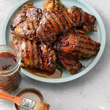

Huli-Huli Chicken

I got this grilled chicken recipe from a friend while living in Hawaii. It sizzles with the flavors of brown sugar, ginger and soy sauce. Huli means "turn" in Hawaiian. This sweet and savory glaze is fantastic on pork chops, too.
Ingredients
- 1 cup packed brown sugar
- 3/4 cup ketchup
- 3/4 cup soy sauce
- 1/3 cup sherry or chicken broth
- 2-1/2 teaspoons minced fresh ginger
- 1-12 teaspoons minced garlic
- 24 chicken thighs
Directions
- In a small bowl, mix the first 6 ingredients. Reserve 1-1/3 cups for basting; cover and refrigerate. Divide remaining marinade between 2 large shallow dishes. Add 12 chicken thighs to each; turn to coat. Refrigerate, covered, for 8 hours or overnight.
- Drain chicken, keep extra marinade to side.
- Grill chicken, covered, on an oiled rack over medium heat for 6-8 minutes on each side or until a thermometer inserted into chicken reads 170°; baste occasionally with reserved marinade during the last 5 minutes.